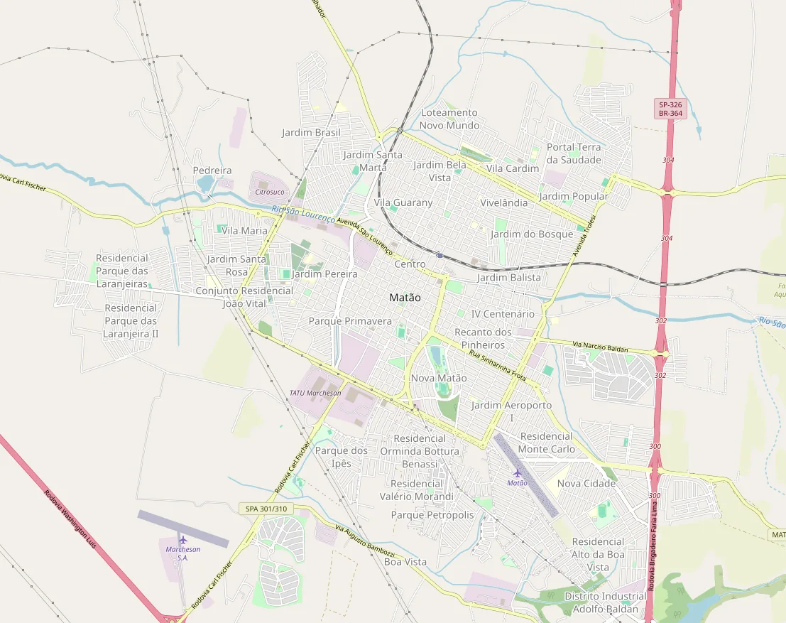

Cidade Ativa
Da informação à solução
Início
Ocorrências
✎ Registrar ocorrência
Ocorrências
Filtrar por tipo
Todas
Falta de água
Falta de saneamento
Esgoto exposto
Saneamento básico
Mapa de Matão - SP

Mapa: © colaboradores do OpenStreetMap